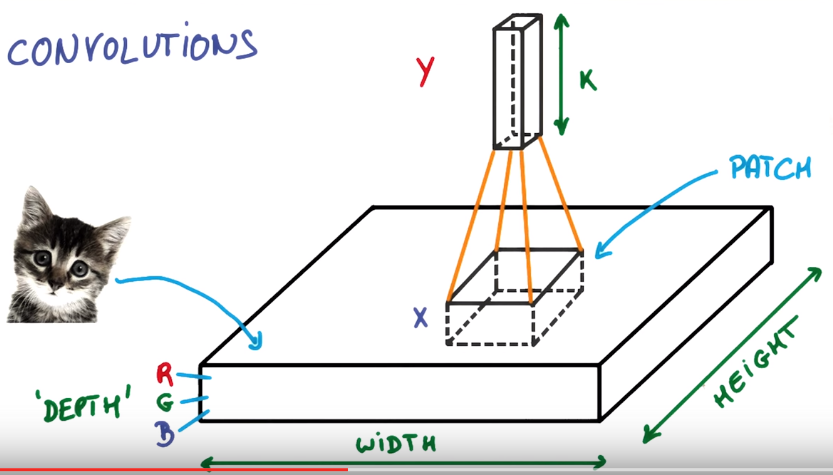
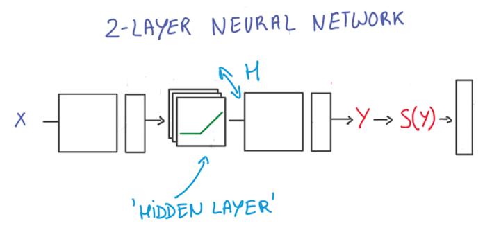
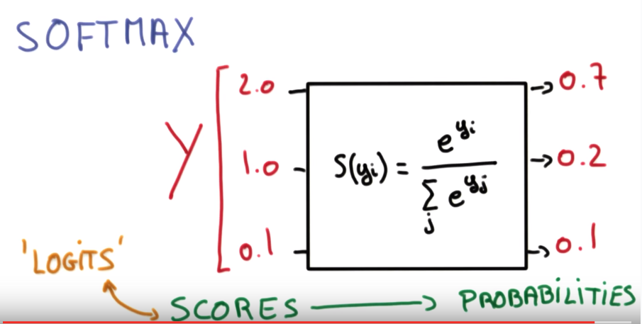
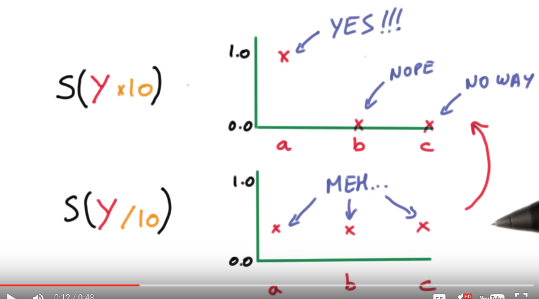
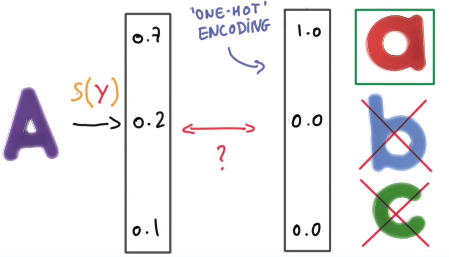

problems with text:
- often very rare word is important, e.g. retinopathy
- ambiguity: e.g. cat and kitty
→ need a lot of labeled data ⇒ not realistic.
⇒ unsupervised learning
similar words appear in similar context.
embedding: map words to ...
problems with text:
→ need a lot of labeled data ⇒ not realistic.
⇒ unsupervised learning
similar words appear in similar context.
embedding: map words to ...
statistical invariance → weight sharing
e.g. image colors, translation invariance...
is NNs that share their weights across space.
convolution: slide a small patch of NN over the image to produce a new "image"

convnet forms a pyramid, each "stack of pincake ...
matrix multiplication: fast with GPU
numerically stable
cannot cocatenate linear units → equivalent to one big matrix...
⇒ add non-linear units in between


chain rule: efficient computationally


easy to compute the gradient ...
这是udacity上deeplearning的笔记, 做得非常粗糙, 而且这门课也只是介绍性质的... https://www.udacity.com/course/deep-learning--ud730
socres yi ⇒ probabilities pi

property: smaller scores ⇒ less certain about result 

recall model of computation: DFA
a univeral model of computation: turing machine
→ no more powerful ...
http://www.imooc.com/learn/317
函数式编程: 更抽象, 更脱离指令(计算机), 更贴近计算(数学).
f=abs; f(-10) abs=len 高阶函数: 接收函数作为参数的函数
def add(x,y,f):
return ...
pb: reduce the size of a file, to save space/time for storing/transmitting.
applications: generic file compression(gzip ...